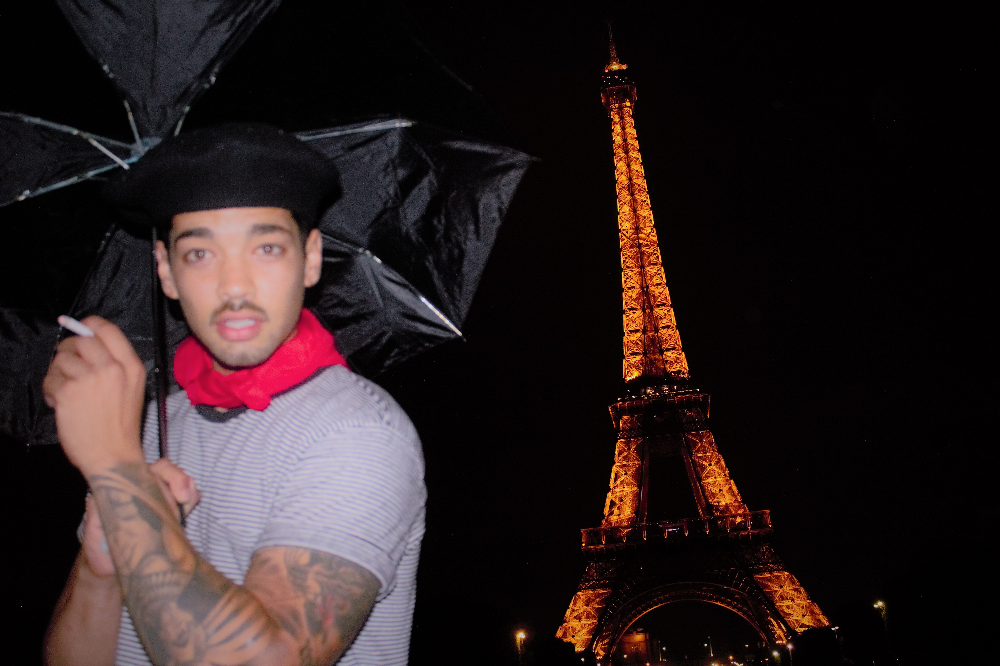

About Me
 Hello, my name is Michael Mansi a stuent at the coding bootcamp at UCSD extension. I am 28 years old. I moved to San Diego 10 years ago to pursue a career in cosmetology. I was a lisenced cosmetologist working in a salon for 7 years. In 2015 I decided to go back to school to further my education and take a new career path. I graduated with my Associates in Sociology. While in school I took computer science classes that i really enjoyed. Instead of finishing my Bachelors Degree I decided attend a Coding Bootcamp to expand my knowledge and puruse a career in computer programming. I am very excited and happy with the decision I made and ready to work in this amazing field.
In my off time I try to explore as much as I possibly can. I love to travel. Getting to see and experience defferent cultures is my favorite. When I can't get away I like to go to museums and see all the great creative works. I also enjoy being active outside; hiking, golfing, and surfing.
Connect with me